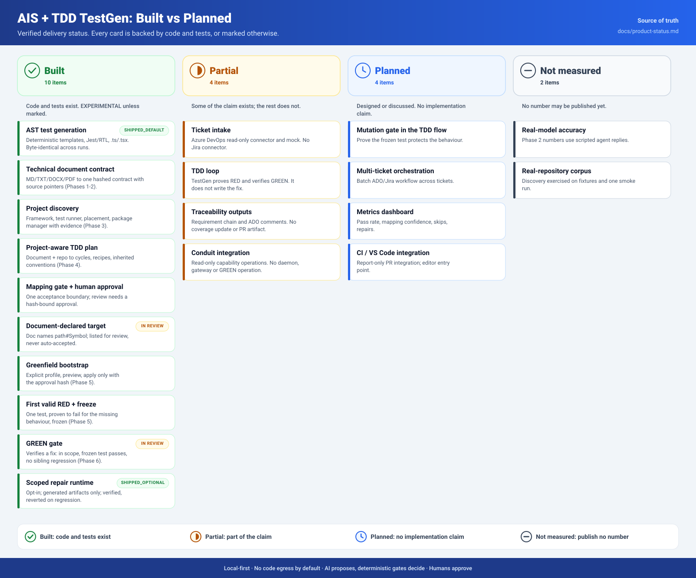
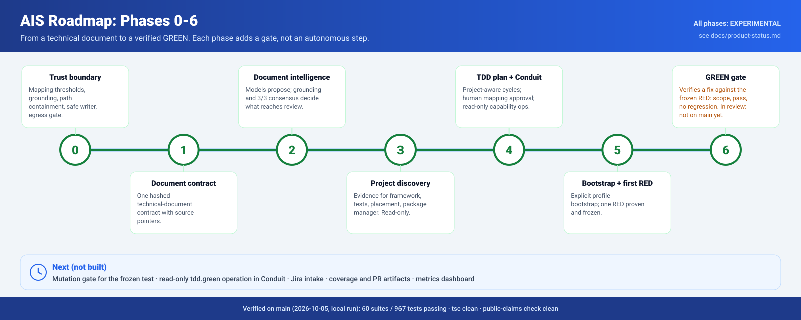
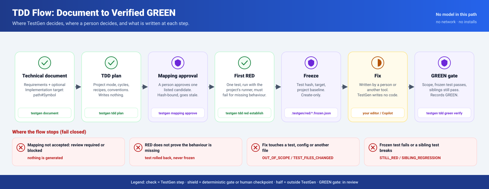
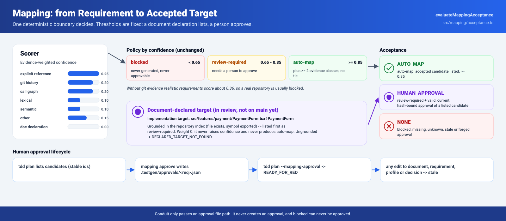
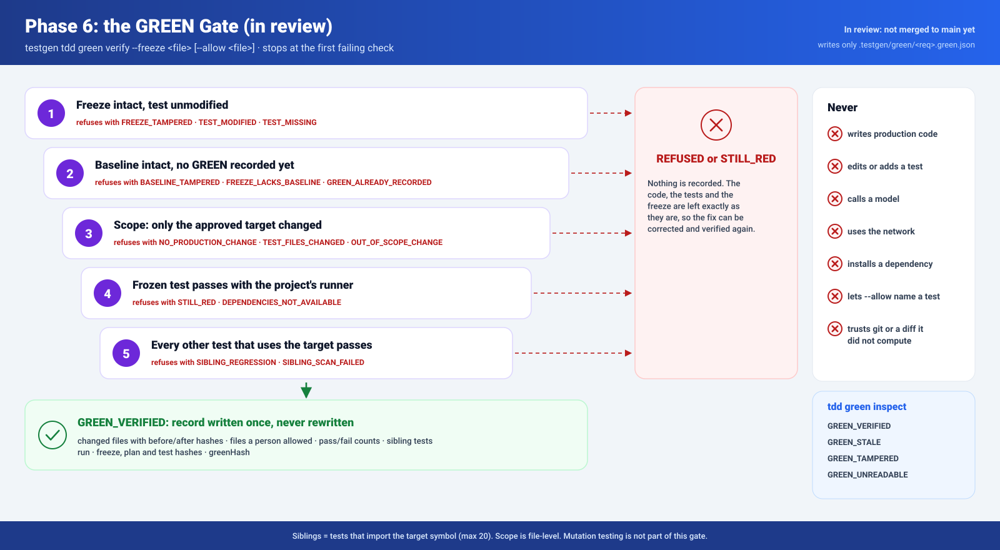

ADO or JSON/YAML
Epic/Feature hierarchy or versioned whole-application blueprint.
testgen app turns a versioned application blueprint or Azure DevOps hierarchy into an approved full-stack plan, deterministic monorepo, criterion-by-criterion TDD workflow, system evidence report, and idempotent draft PR.
ADO and local documents normalize before planning. Downstream generation never branches on the original source provider.
Epic/Feature hierarchy or versioned whole-application blueprint.
Stories, revisions, evidence, content hashes, and the 200-item limit.
Routes, components, APIs, data, authorization, tests, and trace graph.
Approval covers the exact package and plan hashes. Drift invalidates it.
Transactional monorepo, lockfile, migration, containers, and CI.
Valid RED, bounded implementation, GREEN, and regression-safe refactor.
All gates, revision recheck, exact branch, linked work items, audit comment.
JSON Schema Draft 2020-12 validates input. Public V1 contracts carry the normalized truth through approval, TDD, resumption, verification, and delivery.
Application, actors and roles, features, criteria, entities, integrations, routes, non-functional requirements, OIDC mode, and quality policy.
Normalized root and descendants, authoritative stories, complete revision set, source evidence, package hash, and provider-independent blueprint.
Concrete route, component, API, data, authorization, test and trace graphs plus blockers, inferences, planned files, and plan hash.
Requirement hash, frozen-test hash, source-tree hashes, exact commands, exit codes, RED classification, GREEN and refactor regression results.
Run state, owned files and hashes, completed slices, blocked reasons, versions, materialized graph index, quality evidence, and delivery result.
PASS, FAIL, BLOCKED, or NOT_RUN for every required gate. Missing mutation or security tooling remains NOT_RUN and blocks delivery.
The planner establishes ownership and traceability before the scaffold writer materializes a file. After generation, indexes must reconcile exactly with the approved plan.
apps/ web/ React, Vite, React Router Data Mode api/ Fastify modular monolith packages/ contracts/ trusted schemas, OpenAPI, typed client ui/ accessible primitives and design tokens prisma/ schema + committed SQL migrations docker/ multi-stage non-root images azure-pipelines.yml build and evidence, no deploy
Each approved criterion advances independently. The receipt proves that the test existed and failed for the intended missing behavior before implementation changed.
Requirement and architecture hashes are current and the permitted source scope is explicit.
The executable test hash is recorded before behavior implementation.
The test compiles, runs, and fails because the approved observable behavior is missing.
A typed replacement plan may modify only approved source files with matching old hashes.
The unchanged frozen test passes and the source-tree hash proves implementation changed.
Full regression passes; refactoring is allowed only afterward and affected tests rerun.
Sanitized evidence is stored; the manifest can resume at the next unverified slice.
expect(true).toBe(false) do not prove missing business behavior.The verifier evaluates the generated application as a system. Any unavailable required tool reports NOT_RUN and blocks promotion.
migrate deploy limited to CI/production workflowsRun the scaffold inside a pre-created initialized Git worktree on the exact delivery branch.
# Normalize, plan, lint, and approve exact hashes testgen app plan --file .testgen/fixtures/applications/expense-operations.v1.json --output .testgen/applications/EXP-9000.plan.json testgen app lint --plan .testgen/applications/EXP-9000.plan.json testgen app approve --plan .testgen/applications/EXP-9000.plan.json --by product.owner@example.test # Scaffold in the exact delivery worktree git worktree add ../expense-operations codex/EXP-9000-expense-operations-platform testgen app scaffold --plan .testgen/applications/EXP-9000.plan.json --target ../expense-operations # Prove one approved requirement through RED, implementation, GREEN, refactor testgen app tdd red --plan <plan> --target <worktree> --requirement <id> --test <test-file> --source <source-file> testgen app tdd implement --plan <plan> --target <worktree> --requirement <id> testgen app tdd green --plan <plan> --target <worktree> --requirement <id> testgen app tdd refactor --plan <plan> --target <worktree> --requirement <id> # All receipts and system gates must pass before draft delivery testgen app verify --plan <plan> --target <worktree> testgen app deliver --plan <plan> --target <worktree> --repository <ado-repository> --target-branch main
Reads hierarchy, work-item revisions, relations, and changes. Local JSON/YAML implements only this read boundary.
Opt-in ADO write boundary used only after verification and revision recheck.
codex/<ticket>-<slug> branchvso.work_write, and vso.code_write remain separate least-privilege capabilities.Try it in the playground → Run a TDD slice, score a mapping and step through the phases yourself. Where the AIS + TDD work in TestGen stands. Models only propose; deterministic gates decide; a person approves every mapping that is not automatic. Items marked in review are built and tested on a branch but not merged to main yet. The canonical status is docs/product-status.md.





The local verification below supports the generator implementation. Promotion additionally requires complete application evidence in controlled external environments.
| Evidence | Current result | Meaning |
|---|---|---|
| TestGen package | PASS 50 suites, 539 passed, 5 intentional skips | Generator and regression behavior covered in the current workspace. |
| ADO adapter | PASS 3 suites, 22 passed | Provider, authentication, batching, and idempotent delivery behavior covered. |
| Typecheck and claims | PASS both packages; 0 public-claim violations | Contracts compile and documentation avoids unsupported TDD/production claims. |
| Disposable scaffold | PASS install, Prisma, format, lint, architecture, typecheck, contracts, build, audit | The deterministic generated shell is internally coherent and buildable. |
| Expense all-slice pilot | REQUIRED | Every approved criterion needs a valid complete TDD receipt and every system gate must pass. |
| Second application pilot | REQUIRED | Prevents expense-domain overfitting and must independently satisfy the same gates. |
| Live ADO sandbox | REQUIRED | Must prove revision stability, least privilege, linked draft PR, updateable comment, and unchanged rerun idempotency. |